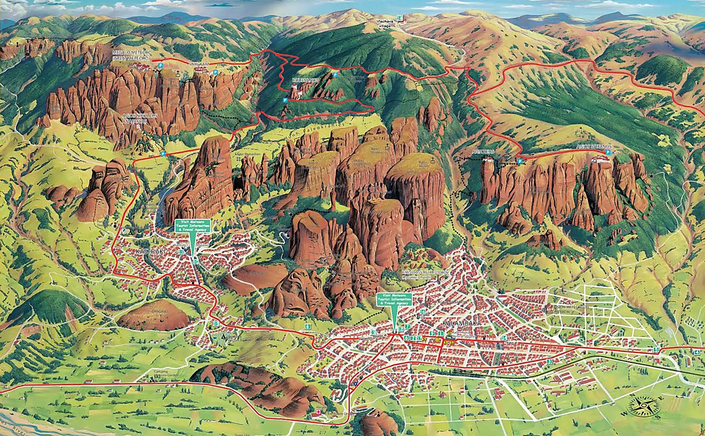
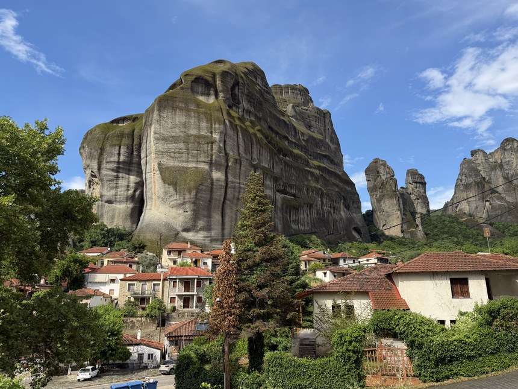
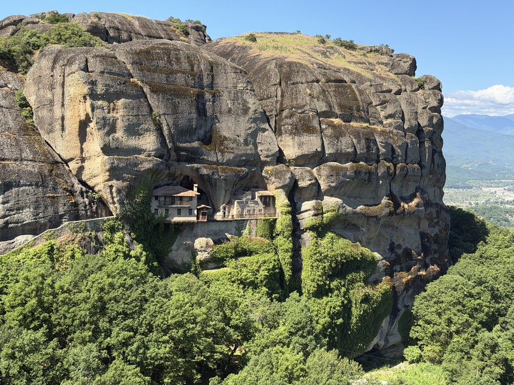
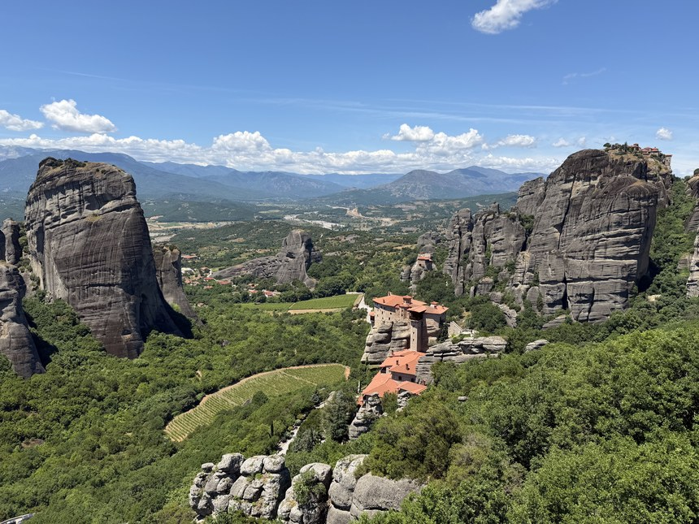
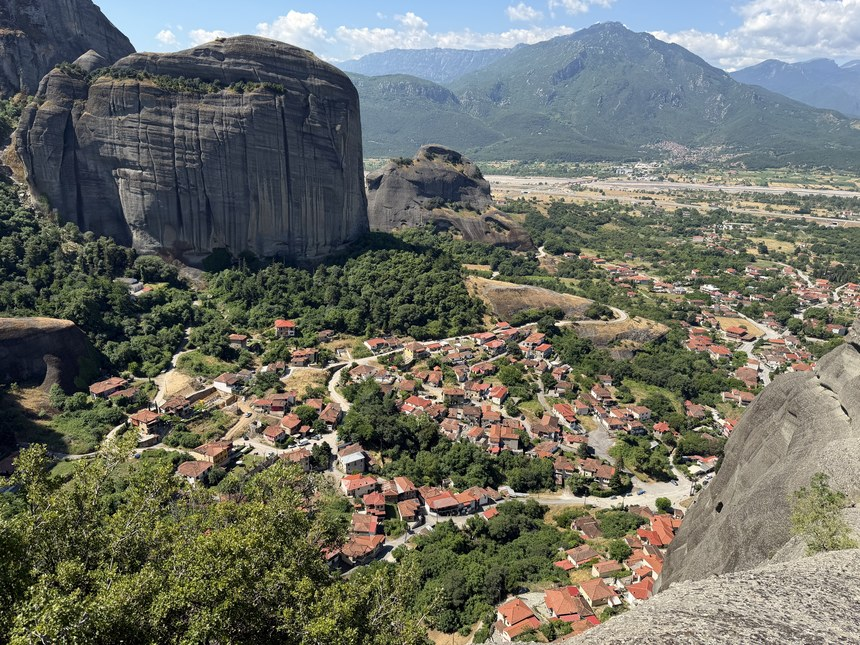
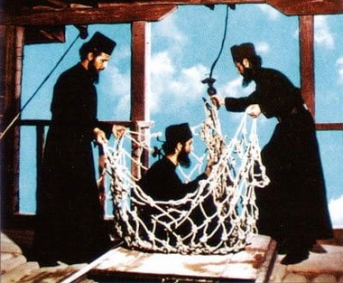
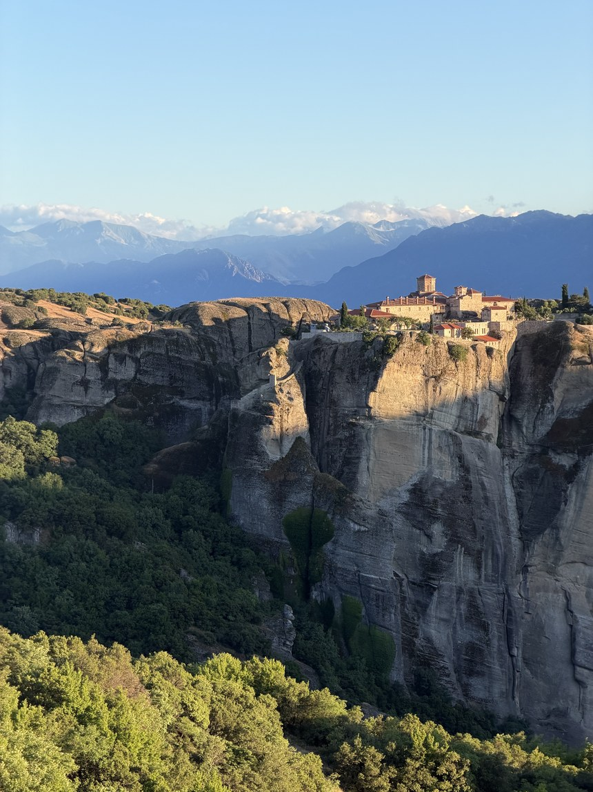
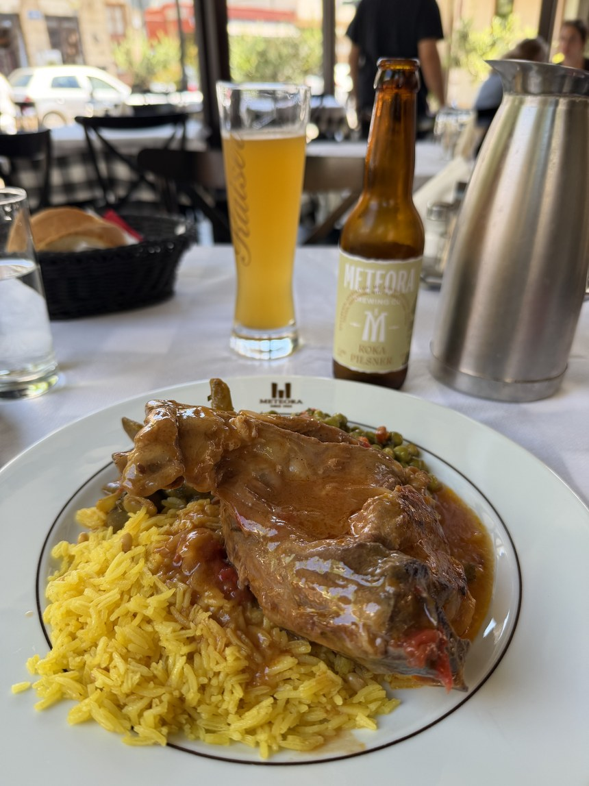

When you think of a vacation to Greece, you're probably thinking about a couple days in Athens to see the Acropolis and then some island hopping in the Aegean Sea. That's exactly how my first trip to Greece went, and I had no idea what I was missing on the Greek mainland...
Located in the mountains of northern Greece, Meteora feels straight out of a fantasy novel: medieval monasteries perched on enormous sandstone pillars that shoot straight up out of a green valley, complete with stories of hermit monks living out of caves. Today, six of the original monasteries are still open to visitors, the oldest dating back to the 14th century.
The monks did not settle on these massive stone pillars to test their construction skills or for the scenery. The region faced constant attacks from the Ottomans, and a monastery atop a sheer pillar was the safest place to hide. For centuries the only way up was a net on a rope, hauled up with a wooden winch!
Nowadays, you can visit by hiking between the monasteries, by car, by e-bike or even on a day tour from Athens. For a place in one of the most visited countries in the world, Meteora is surprisingly quiet. It was the most impressive landscape I saw in Greece, and one of the most impressive I've seen anywhere. Below you'll find the logistics, the best activities, and an overview of each monastery, so you can plan your own trip to Meteora.

The Logistics
The whole area of Meteora spans just 7 square kilometers, which is much smaller than I expected. All six monasteries lie within a few kilometers of each other along a giant loop road. Although many visitors opt for a day tour from Athens or Thessaloniki, both options often feel rushed and require a lot of driving. You'll also miss the opportunity to hike between the monasteries and catch the famous golden hour. I highly suggest spending two days, the perfect amount of time to explore Meteora and see all the highlights.

Tap a pin for its name, tap again to jump to it
Where to Stay
The most important decision is where to stay in Meteora and luckily it boils down to just two towns: Kastraki and Kalambaka. Stay at least one night, and preferably two, so you have a full day to explore and can catch the sunset. The two towns lie only 5 minutes apart and the main difference is the size of the towns:
- Kastraki is the smaller village right at the base of the pillars, with a church in the center and a handful of restaurants lining the main street. It is very quiet and peaceful, and the views from the streets are incredible. Personally, I would recommend staying in Kastraki for the small-village feel: everything is within a 5-minute walk, the people are friendly and the hiking trails start at the edge of town

- Kalambaka — the bigger town, built around a central square and also very close to the monasteries. It has a larger selection of hostels and restaurants, plus the train station, so it's the easiest base if you arrive by rail. The trade-off is that it's completely geared around Meteora tourism and a bit more expensive than Kastraki
I stayed at Thalia Rooms in Kastraki, a 3-unit guesthouse just off the main square with small, self-contained rooms. The lovely host, Ritsa, is the reason I got so much out of my time in Meteora. Moments after I arrived, she met me at the bus station and made sure I was settled in. She gave me a paper trail map, recommended restaurants and the e-bike shop, and even helped me plan a 2-day itinerary for the monasteries.
Getting to Meteora
Meteora lies in the mountains of northern Greece and takes about 3 to 4.5 hours to get to from Athens (4.5 hrs) or Thessaloniki (3 hrs). Here are the main ways to get there:
- By Car — getting to Meteora by car is by far the easiest way, about a 4-hour drive from Athens and 3 hours from Thessaloniki. You'll also have the added bonus of having a car to explore Meteora once you arrive
- By Bus — a one-way ticket is 36€ from Athens or 25€ from Thessaloniki, all the way to Kalambaka. Be prepared for a transfer in Trikala, where you switch to a local bus for Kalambaka and Kastraki, the two towns at the foot of the rocks. Tickets are on the KTEL Trikala site or easily purchased in person
- Between the two towns — Kalambaka and Kastraki are only 5 minutes apart by car (a 5€ taxi or 2 km walk). If you're just arriving by bus, it usually stops in Kalambaka first and carries on to Kastraki.
How to Explore Meteora
Here are the four best ways to explore Meteora. I highly advise you to avoid the day tour from Athens or Thessaloniki unless you're very short on time. You'll miss what were the true highlights for me, the sunsets, and you'll only get a short time at the monasteries at peak hour, when they are busiest with other day-trippers.
Believe it or not, visiting the monasteries themselves was not the highlight: it was actually the scenery and views you get along the way.
Hiking Between the Monasteries
Hiking between the monasteries was hands down my favorite day in Meteora, and I even had the whole trail to myself. I started in Kastraki and followed a wide loop out around the monasteries (see map above) that runs about 11 miles (17 km). It took me a full day at a relaxed pace with stops to visit the monasteries.
Strangely, most tourists skip the hike! I didn't pass a single other hiker the entire day. The trails were very peaceful, except for the occasional tortoise or lizard you come across. Meanwhile, the monasteries were packed with people off tour buses, cars and even a big group on a motorcycle trip.
The one challenging part was navigating. The trails aren't on Google Maps or AllTrails, there are almost no signs, and the paper map you'll be given isn't drawn to scale. The best you can do is get the map from your accommodation and have them walk you through the routes before you head out. I did my best to draw out the exact route on the map above! That said, the hike was relatively straightforward, and there weren't too many forks in the trail to get lost at.


The benefit of the hike was stumbling onto monasteries and viewpoints not accessible from the road. I came across Agios Dimitrios, an ancient nunnery hanging off the side of a massive rock face that wasn't on Google Maps. It was closed, but exploring alone and seeing how it was built into the cliff hundreds of years ago was absolutely worth the climb. The viewpoint next door sits on top of a rock with a statue and a Greek flag, and again there was a view over the entirety of Kastraki and not a single soul there.
E-Bike
If you're not up for a long day of hiking, an e-bike is the perfect way to get around. Around sunset, it was my favorite way to explore. It makes the climbs a breeze, there is very little traffic on the loop road, and bombing the hills on the way back down was exciting. I hit 50 km/h (about 30 mph) coming down into Kastraki!
There are rental shops in both Kastraki (here) and Kalambaka (here). Expect to pay roughly 15€ for 2 hours, 20€ for 4 hours or 25€ for the day. The higher-priced bikes have more powerful motors, which makes the hills much easier.
Driving
A car is the fastest and most efficient way to see the most monasteries in a day, and also the best option if the hills or the heat are too much for hiking or biking. A paved loop road connects all six monasteries with Kastraki and Kalambaka, and you can drive the whole thing in about 20 minutes without stopping, so you can easily fit four or five monasteries and a sunset viewpoint into one day.
Every monastery has a small parking area, but they fill up by mid-morning once the tour buses arrive, so start early or go late in the afternoon. Most visitors drive in from Athens or Thessaloniki and pick up a rental there, since Kalambaka only has a few small rental agencies.
Day Tour from Athens or Thessaloniki
Day tours run from Athens or Thessaloniki, but you'd spend most of the day on the bus. I'm sure you'd still enjoy the tours, but I highly recommend staying at least one night to catch the sunset and do some hiking.
A typical tour leaves Athens around 7 a.m., takes about 4.5 hours each way by minibus or train, and gives you around 3 hours in Meteora, enough for 2 or 3 monasteries and a quick stop at a viewpoint before the long ride back. They usually run at least 100€ per person. If you're tight on time, a 2-day tour with a night in Kalambaka is a much better deal, but even then I'd skip the tour, take the bus and stay the night.
Where to Get the Best Views of Meteora
As I said before, the best part of Meteora is not visiting the monasteries; it's catching the breathtaking views (usually from the top of a massive rock with no railing). Here are the best places to do exactly that:
Sunset Viewpoints
I've been hyping up the sunsets this entire article and the two best places to catch them are Viewpoint Meteora and the Main Observation Deck of Meteora. The names might sound fancy, but they are both huge bare rocks you walk out onto with no railing or security watching. Be careful, but the sandstone provides surprisingly good traction and you can get close to the edge. You'll look straight down into the valley with the monasteries perched on their pillars in front of you.
The sunset here is no secret, so both viewpoints get busy, with people starting to gather 30 minutes before sunset. Go early to grab a good seat! I decided to visit both viewpoints on back-to-back nights and preferred Viewpoint Meteora since you can actually see more monasteries from there.

The same viewpoints also make for great views during the day if you're not able to catch a sunset.
The Holy Spirit Rock Hike

I was a bit confused at first when a local at the e-bike shop told me about The Holy Spirit. It turns out he was talking about a short 40-minute hike to the top of a huge boulder overlooking Kastraki. As with most hikes in Meteora, this hike isn't on Google Maps or AllTrails, and there is only one faded sign the whole way, but the trail is pretty clear and this detailed guide has every marker you need. It was quite a fun adventure just following the pictures in the guide the whole way!
The hike is steep, so take it slow. You start by walking through a few neighborhoods in Kastraki until you reach a sign marking the beginning of the trail. On the way up, I saw a bunch of turtles and one tiny pink snake.
At the top, there is a white church door built into the rock with a small shrine beside it, and a slightly sketchy ladder onto the summit, where a bell and two flags sit. It has by far the best view of Kastraki, with a 360-degree view over the whole town below. Even though it's a short hike right outside town, I was surprised again to have it completely to myself.

Visiting the Monasteries
Each one of the 6 active monasteries has a slightly different look, feel and personality. I'll admit it was a bit intimidating to choose which ones to visit. You don't need to see all six. I would pick just two or three. My personal favorites were the Great Meteoron and Roussanou.
Before you go, here is what you need to know to plan your visit:
- Only a part of each monastery is open to the public. In most cases, the area open to the public is very small so they're only short 15- to 20-minute visits. With large tour buses arriving, they can often feel very crowded
-
Each monastery closes on a different day of the week, so plan your visits accordingly:
- St. Stephen: closed Monday
- Great Meteoron: closed Tuesday
- Roussanou: closed Wednesday
- Holy Trinity: closed Thursday
- Varlaam & St. Nicholas Anapafsas: closed Friday
- All of the locations are traditional Greek Orthodox monasteries where knees have to be covered before you go inside, for both men and women. Every entrance has a station with cloth wraps you can borrow and tie around your waist too
- Entry to each monastery costs 5€
Now you're ready to explore! I've written a brief description and added photos of each monastery to help you decide which ones to visit.
Great Meteoron

Great Meteoron is the oldest and by far the biggest of the six, and if you only have time for one, this is it. In fact, the whole area takes its name from this monastery. The story goes that a monk named Athanasios climbed this rock in the 1340s and founded a community on its summit, the highest pillar in the area. He called it Meteoron, meaning "suspended in the air," and the name spread to the whole valley.
The visit starts with an impressive set of stairs cut into the rock, and the viewpoint on the stairs looks out to Varlaam and St. Nicholas in the distance.
The first stop inside is a wine cellar full of old wooden barrels. I'd always pictured monks as sober, but wine and beer making have been part of monastic life in Greece for centuries. Past the cellar is the old kitchen, still black from centuries of smoke. Then you'll reach the main church, covered floor to ceiling in 16th-century frescoes, with hundreds of lamps hanging from the ceiling.
The last two highlights are the courtyard and the museum. The courtyard is decorated with a variety of frescoes and a well-kept garden with plenty of views of the valley below. The museum is filled with Byzantine manuscripts and icons. The room that stuck with me the most is the ossuary, where the skulls of the monks who lived here are stacked on shelves behind a window. Great Meteoron is the one monastery where you could easily spend an hour.
Varlaam
Varlaam is the most architecturally impressive monastery from the outside, with a wall running all the way around the complex. It is named after a hermit who climbed the rock alone in the 14th century, but the monastery itself was built two hundred years later by two brothers from Ioannina.

The story goes that it took them 22 years just to haul the building materials up, and only 20 days to build the church. Inside is a 16th-century church covered in frescoes, the original net and wooden winch that pulled supplies and visitors up the cliff until the 1920s, and a huge wooden barrel the monks used to store rainwater. If Great Meteoron is the one for history, Varlaam is the one that best shows how hard it was to live up here. It happened to be closed the day I walked past, so check the schedule above before you climb up.
Roussanou
Roussanou is a small nunnery on a lower pillar that you'll easily spot from either of the sunset viewpoints. It is one of the most accessible, since it sits right by the road, across a short bridge and up a few flights of steps. Two other brothers from Ioannina founded it in the 16th century, and since the 1980s it has been home to a community of nuns.
The building fills every inch of its rock, and inside there is a church, a small museum and the highlight is a beautiful little prayer room covered in frescoes of Christian martyrdom, with saints being burned, beheaded and tortured in graphic detail! It is a really quick visit (less than 10 minutes), but still one of my favorites, and the views down the valley from its windows are some of the best of any monastery.
Don't leave the way you came. A trail climbs up from Roussanou to Viewpoint Meteora, which has a better view of 4 of the monasteries than the main lookout. The rock has a lot of grip, so it isn't sketchy to walk out to the edge. I had it to myself until a group of 50 Polish high schoolers showed up.
St. Nicholas Anapafsas
St. Nicholas Anapafsas is the smallest of the six, and it is the first one you reach coming up the road from Kastraki. The rock it was built on is so narrow that the monastery couldn't spread out, so it was built upward instead, ultimately becoming three floors tall. It is home to a small church, a gift shop and a roof terrace stacked on top of each other.
What makes it worth the stop is the church: its frescoes were painted in 1527 by Theophanes the Cretan, one of the great painters of his time, and they are the best preserved in the valley. Look for the scene of Adam naming the animals in paradise. Most of the building is off-limits to the public, and since it's the smallest monastery, it was uncomfortably packed with tourists when I visited. I would say skip this one unless you want to visit all the monasteries.
Holy Trinity

At the far end of the loop road, Holy Trinity (Agia Triada) has the most dramatic setting of the six: it stands alone on a freestanding pillar with the full mountain range in the background. It was featured in the James Bond film For Your Eyes Only in 1981, and the story goes that the monks were so unhappy about the filming that they hung their laundry out of the windows to ruin the shots.
There is a 140-step tunnel carved up through the rock to the entrance. Until those steps were cut in the 1920s, the only way in was by net or rope ladder, and the monks still send supplies across the gorge in a small cable car. Inside is a small 15th-century church, but most people come for the climb, and Holy Trinity is known for having the best views over Kalambaka.
St. Stephen (Agios Stefanos)

St. Stephen (Agios Stefanos) is the easiest to get into, since you cross a bridge instead of climbing stairs, and it sits right above Kalambaka, with a view straight down onto the town. It also has the roughest history of the six: it was bombed during World War II and nearly abandoned, until a community of nuns took it over in 1961 and restored it.
Today it is a working nunnery, and the nuns are known for their embroidery, which you can see and buy inside, along with a relic said to be the skull of St. Charalambos. I only saw St. Stephen and Holy Trinity while on the e-bike, and the views on that end of the road were worth the ride on their own.
Where to Eat
As everywhere in Greece, the food in Meteora was incredible. Most of the restaurants were small, family-run tavernas, serving homemade food as if you were a guest staying at their house. In both Kastraki and Kalambaka, most of the restaurants sit on the main street and around the square. Many of them also have amazing views of the rocks towering above. If you're interested in learning more about what to order, see the cuisine section of my Greece field notes.
Kastraki
Taverna Gardenia — the best restaurant in Kastraki, with a team of friendly young Greek waiters. Order the moussaka and the local monastic beer from Meteora Brewing Co., a small-batch beer made by the monks. The brewery has an interesting story (see their website for more), and when else will you get to drink a beer brewed by monks? The waiters will also surprise you at the end with a free slice of lemonopita
Taverna Ouzeri Pappas — a restaurant with a deck on the main street looking straight at the pillars, where the view does as much work as the food. I would recommend the chicken souvlaki with fries here
Evangelos Batalogiannis Bakery — a tiny bakery run by one old man who doesn't speak a word of English. Grab a spiral feta roll and a spanakopita for breakfast or a snack for the hike
Kofi Hub — a small modern coffee shop on the main street. The coffee is great, and there are nice tables outside. The staff were very friendly too. They let me leave my backpack behind the counter while I hiked the Holy Spirit rock
Kalambaka
Restaurant Meteora Gkertsou Family — a fancier restaurant in Kalambaka, but definitely worth the price. I ordered the house specialty, lamb slow-cooked in red wine and served with rice. The portion sizes were also enormous

Octo Coffee & Breakfast — a brunch spot in Kalambaka that serves a variety of delicious homemade juices
That covers everything you need to know to plan a great trip to Meteora. If you're coming from the north, it is easily paired with a visit to Greece's second-largest city, Thessaloniki, and for more tips on Greece, from Athens to the islands, visit my Greece field notes.